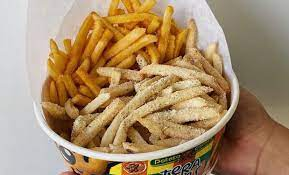

The Laksa Curry is indeed flavorsome. I loved it! Plus, their service is quick but that certainly does not compromise the quality of the foood 👌🏽
Also, the food is affordable...really worth the money given their portion size. Highly, highly recommended!
The first thing I noticed was that there was little sauce on the Takoyaki I ordered but too many toppings.
The inproportionate ratio made the Takoyaki dry and hard to eat. Moreover, I could see and taste that the toppings
were not really fresh. The seasoning was good, but the execution on the dish all-in-all ruined this subtle goodness.
This is certainly my favorite food place in DLSU. So convenient to eat in the campus with food
that tastes close to one's home, so gooooood. I don't have to go out anymore and the prices are not bad for anyone
on a budget. The service is great. My personal favorite is the Chicken Cordon Bleu...chef's kiss😘
Their fries are addicting, especially the cheese flavor and sour cream flavor. Yuuuuuum! Writing this review makes me crave for
it. I always lick my fingers after eating those fries hahahahah not really embarrassing 😮

3 votes for helpful, 1 votes for unhelpful, 2 comments
Helpful
Unhelpful
Comment
Comments
NI-KI
No worries... I also lick my fingers after eating their fries hahaha.. They're just so good!

Comments
For Potato Corner
MOMO
15 reviews
5 ⁕
DINE-IN
June 01, 2023
Addictingly Delicious
POSITIVE
finger-licking fries
3 votes for helpful, 1 votes for unhelpful, 2 comments
Helpful
Unhelpful
Comment
Comments
NI-KI
No worries... I also lick my fingers after eating their fries hahaha.. They're just so good!
Sent June 02, 2023